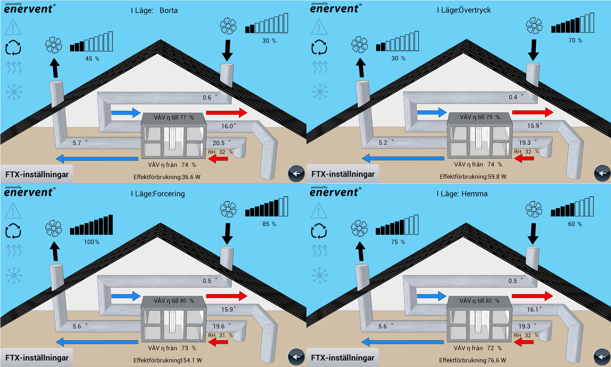
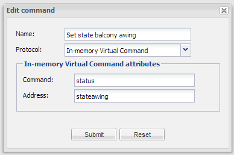
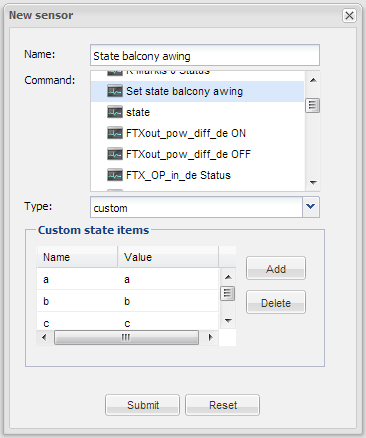
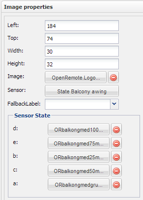

Hi!
I've looked in the sample file "Holidays.drl" from the test suite, and it says for example
> then
>
> execute.command ("temp", 21);
>
> end
What kind of command is "temp"? I haven't found any command to write a specific value. Is it possible to send 21 to the KNX installation without using a slider?
Another question.
I want to show different images for different ranges of values (ex, a type of stabeldigram for the air supply fan, 0 - 10% one pin 10 - 20% two pins 20 - 30% three pins......
My first thought was to use a Custom sensor and have different states for different ranges of values, but I couldn't get it to work with < and > characters in the Value field (is it possible to have a Custom Sensor with ex. "State1" Value <10 and "State2", Value > 10 && <20)?
Then I tried with a rule file and create a "virtual value" (ex. 10 for 0-10, 20 for 10-20....) And then use a custom sensor with states for 10, 20 .... and different images for different states. But I didn't found any way to get the custom sensor to read the virtual value. Is there any way to solve this?
(A In-memory virtual command to save and view "virtual" values from the rules would be an nice feature)
Now I use rule files and "In-memory Virtual" On, Off, and Status commands for each interval then I have Images and use a On/Off-Status-sensor to put on and off the images for each interval . It works, but there will be two rules, three commands and one sensor for each (11) interval. Then I must have an "off picture" for each interval (witch I don't want).
(Did anyone understand this???)
Is there any easier or better way to solve this?
/Kenneth
{kind=link}
{kind=link}
{kind=link}
{kind=link}
{kind=link}
{kind=link}
|
"temp" in that case is a dummy command which created from the testsuite. The custom sensor does not allow the greater or smaller logic. You could create a rule for that and give the state 1,2,3 into the sensor from the rule. |
|
Thank you very much Markus! I tried with a "temp" command together with my rules and I got it to work. The solution with, put a custom sensor in different states directly from a rule, sounds great. I'll try it as soon as I have learned a little more about rules. (I'm not sure how the rule syntax to put a sensor in different states should look.) /Kenneth |
|
True, in the moment a command needs UI object linked to it to be exported into the controller. Custom sensor should also work with DPT5.001. If not try Level which 1-100% |
|
Hi, Markus. Now I don't think I understand what you mean. The reason you recomend a custom sensor was to use the states for showing different images. Can you have states in a level sensor? I tried again with a custom sensor and a DPT5.001 command and it didn't work now either. (February 27, you wrote this to me.) That's why I wished a "in-memory virtual command" to get a value from a rule into a sensor /Kenneth |
|
I think, I also misunderstood you |
|
Thank you for taking your time to explain this to me. I really appreciate it. Yes, that's the way I understood you the first time. My question was referring to what command I should use when I create the state sensor (with state sensor, I assume you mean a custom sensor with states?) Can I take any command (except DPT5.001 commands) because the state sensor will not use the command? /Kenneth |
|
Any command should do it. You could try the dummy command. |
|
Hi, Markus. I've been trying all weekend to find out how the rule to put the state sensor in different states should look like, but without any success. I even tried to look in the source, but it was too difficult for me. The first half is not a problem, but I can't figure out, how to put the custom sensor in different states. Do you have the possibility of helping me with the missing line?? rule "create state1 for fan speed" when Level( source == "fan speed", value > 0 && <= 10 ) then ????? ("name of state sensor") ??????? ("name of state1") end Thanks in advance. |
|
I will try something myself and also asked Juha to take a look. |
|
Thanks a lot! I really appreciate it. /Kenneth |
|
The VirtualCommand did not support a CustomSensor, but only the CustomSensor allows different images for each state. |
|
Yes Yes! It works for me too Markus Thank you so much. You guys really do a fantastic job. Will the new Virtual Command "1" be added in the disigner in the future, so I can add it there instead of edit the controller.xml? One small problem I noticed is, that after every time I restart the controller, I have to do a sync to get it to work. This is the log text I get before I have synced: Exception in thread "Polling Sensor Thread ID = 783, Name ='State sensor'" java.lang.NullPointerException Could it have something to do with, that I get this error message every time I stop the controller with Ctrl C. ERROR KNX IP reconnector: Disconnect failed The result is that I have to wait a few minutes before I can get the controller to start properly again. I don't think I had that problem with earlier versions of the controller. Thank you, |
|
The polling Error and the KNX error should not be related. The virtual command itself should be already in the designer. What is not available there? The few minutes wait could be because your KNX gateway only releases the connection after a few minutes if the connection was not closed properly. This is probably related to the KNX problem. |
|
When I try to create the new Virtual Command "1" in the designer, I can't fill in command = 1. It says "use on/off or status" |
|
The NullPointerException is from my modification. Please update with the attached VirtualCommand.class. The KNX problem, we have to investigate. |
|
Thanks Markus! Now the state sensor works perfectly, no polling errors and status as command works too. Thank you very much. |
|
You are welcome. |
|
I'm just at the beginning of my design, but as soon as I have something that may be worth showing, I promise to post some screenshots. |
|
Hi all! I focus on monitoring my 1-wire radiation solar sensor. Sensor gives me the current values witch I can display with using custom sensor. Output value is like 0.0002343. I would like to set rules to separate range of output values. Like from 0 to 0.0003454, display "it is dark " and so on. I did the following steps:
package org.openremote.controller.protocol global org.openremote.controller.statuscache.CommandFacade execute; rule "crate a" rule "create b" I tried with "Level" but it didn't work. Do I need to use "CustomState"? I'm also confused by the line " $evt : "(like $evt : Range()). When can i use this? Thanks for all support, |
|
Are you using the 2.0 release with the patches from this thread? The 1-Wire command only returns a String and no number like the KNX temperature command. rule "crate a" |
|
First, thanks for your quick reply. Yes i'm using the 2.0 release with the patches from this thread. But i have strange problem. When i define rules and upload it into controller, all my display number(labels)... temperature (1-Wire) and date (DateTime protocol) (which is not connected with rules or virtual command) became N/A. Rules: package org.openremote.controller.protocol global org.openremote.controller.statuscache.CommandFacade execute; rule "create a" rule "create b" Thank you, |
|
Please check the log directory and see if you find any errors and stacktraces. |
|
This is from boot.log. DEBUG 2012-04-18 15:17:37,274 : Initializing event processor: Drools Rule Engine |
|
The Drools version we currently use, does not support Java7. Can you try with a Java6? |
|
I will try with a Java6. Thank you very much, |
|
Hi. I installed java6 and tried deploy my configurations. I get this (boot.log): UNDEPLOYING CURRENT CONTROLLER RUNTIME... Any idea why Drools Rule Engine stopped? Thanks, |
|
It looks like the system started with a configuration that was already there and then a new sync was performed which does an undeploy first and then deploys again. Please stop your Tomcat, delete controller.xml, panel.xml, panel.obj and any files in "rules" folder. Then start Tomcat again which should not deploy anything. Now you can do a clean sync and see what happens. |
|
Now i get more useful errors: DEBUG 2012-04-19 13:26:30,891 : Adding Rule 'modeler_rules.drl'... Unknown macro: {(validateIdentifierKey(DroolsSoftKeywords.RULE))} ? in ruleERROR 2012-04-19 13:26:31,551 : ERR 101 Line 2:8 no viable alternative at input 'org' in rule package ERROR 2012-04-19 13:26:31,551 : ERR 101 Line 4:0 no viable alternative at input 'global' in rule package in rule event ERROR 2012-04-19 13:26:31,551 : ERR 101 Line 12:56 no viable alternative at input 'value' in rule package in rule event in rule "ustvari stanje a" in pattern CustomState ERROR 2012-04-19 13:26:31,551 : ERR 102 Line 12:82 mismatched input '0.0000000' expecting ')' in rule package in rule event in rule "ustvari stanje a" in pattern CustomState in pattern Float.parseFloat ERROR 2012-04-19 13:26:31,551 : ERR 101 Line 12:96 no viable alternative at input '<=' in rule package in rule event in rule "ustvari stanje a" in pattern CustomState ERROR 2012-04-19 13:26:31,551 : ERR 102 Line 12:116 mismatched input '0.0002111' expecting ')' in rule package in rule event in rule "ustvari stanje a" in pattern CustomState in pattern Float.parseFloat ERROR 2012-04-19 13:26:31,551 : ERR 101 Line 19:50 no viable alternative at input 'value' in rule package in rule event in rule "ustvari stanje a" in rule "ustvari stanje b" in pattern Level ERROR 2012-04-19 13:26:31,552 : ERR 102 Line 19:76 mismatched input '0.0002111' expecting ')' in rule package in rule event in rule "ustvari stanje a" in rule "ustvari stanje b" in pattern Level in pattern Float.parseFloat ERROR 2012-04-19 13:26:31,552 : ERR 101 Line 19:90 no viable alternative at input '<=' in rule package in rule event in rule "ustvari stanje a" in rule "ustvari stanje b" in pattern Level ERROR 2012-04-19 13:26:31,552 : ERR 102 Line 19:110 mismatched input '0.0050111' expecting ')' in rule package in rule event in rule "ustvari stanje a" in rule "ustvari stanje b" in pattern Level in pattern Float.parseFloat ERROR 2012-04-19 13:26:31,555 : There was an error parsing the rule definition 'modeler_rules.drl' : Could not parse knowledge. java.lang.IllegalArgumentException: Could not parse knowledge. at org.drools.builder.impl.KnowledgeBuilderImpl.newKnowledgeBase(KnowledgeBuilderImpl.java:58) at org.openremote.controller.statuscache.rules.RuleEngine.getValidKnowledgePackages(RuleEngine.java:532) at org.openremote.controller.statuscache.rules.RuleEngine.start(RuleEngine.java:253) at org.openremote.controller.statuscache.EventProcessorChain.start(EventProcessorChain.java:112) at org.openremote.controller.statuscache.StatusCache.start(StatusCache.java:120) at org.openremote.controller.deployer.Version20ModelBuilder.buildSensorModel(Version20ModelBuilder.java:615) at org.openremote.controller.deployer.Version20ModelBuilder.build(Version20ModelBuilder.java:537) at org.openremote.controller.deployer.AbstractModelBuilder.buildModel(AbstractModelBuilder.java:148) at org.openremote.controller.service.Deployer.startup(Deployer.java:760) at org.openremote.controller.service.Deployer.softRestart(Deployer.java:373) at org.openremote.controller.service.Deployer$ControllerDefinitionWatch.run(Deployer.java:1188) at java.lang.Thread.run(Thread.java:662) INFO 2012-04-19 13:26:31,659 : Initialized event processor : Drools Rule Engine This are my rules: package org.openremote.controller.protocol rule "ustvari stanje a" rule "ustvari stanje b" |
|
I also get a lot of those errors when I use the "package org.openremote.controller.protocol" Try without that line. / Kenneth |
|
The same errors appeared. Just for information: With this configuration (rules) my android app crashes. /Nejc |
|
This rule works: package org.openremote.controller.model.event global org.openremote.controller.statuscache.CommandFacade execute; global org.openremote.controller.statuscache.SwitchFacade switches; global org.openremote.controller.statuscache.LevelFacade levels; import java.lang.Float; rule "test 1" when CustomState(source == "Temp1Sensor", val : value, eval(Float.valueOf(val) > 24.000) && eval(Float.valueOf(val) < 26)) then System.out.println("between 24 and 26"); end Try to adapt to your needs. |
|
I tried to adopt but without success. My rule: import java.lang.Float; rule "ustvari a" rule "ustvari b" And error list: / Nejc |
|
try: Float.valueOf((String)val) |
|
Now there are no errors, but Drools Rule Engine is stopped. Boot.log: Sensors.log (svetilnost sensor is custom sensor that uses Virtual command): |
|
Can you try and delete controller.xml, panel.xml, and file within rules folder. |
|
The same happens. |
|
It seems to redeploy the configuration. |
|
No, i didn't. When I run openremote.sh I get in terminal: |
|
Everything looks normal. INFO: Starting Coyote HTTP/1.1 on http-8080 Apr 23, 2012 5:58:48 PM org.apache.catalina.startup.Catalina start INFO: Server startup in 6891 ms Can you see your design when access the controller with your console? |
|
If you start tomcat does it look like this at the end: yes. I can see my design in webconsole. Label that should display rule output isn't shown. Other looks normal. |
|
(del) |
|
I searched forums and haven't found such an issue. I want send a value to KNX via Switch or button. I have created In Memory commands: on, off, status. Then i created sensor using status command and after that I created Switch. Addresses for commands are "dummy". I also added switch to a panel. I also created rule which, I hope, will write value to a KNX group addres (scene recall). Updated file VirtualCommand.class The Rule is rule "Send Value 1" when Switch( source == "switch 1 sensor", value == "on") then execute.command("Scena 1 slide",1); end And I get error form openremote ERROR 2012-05-23 16:31:35,925 : Rule definition 'modeler_rules.drl' could not be deployed. See errors below. Rule Compilation error : Rule name='Send Value 1' What am I doing wrong? I think that the value should be derived from sensor but why OpenRemote cannot resolve ObjectType Switch? I would really appreciate your help. P.S I tried with rule rule "Send Value 1" |
|
Do you have the package, the globals and imports in your rule file? package org.openremote.controller.model.event global org.openremote.controller.statuscache.CommandFacade execute; global org.openremote.controller.statuscache.SwitchFacade switches; import org.openremote.controller.protocol.Event; infront of your rule definition |
|
That's it! I did quick update and everything works perfect now! Thank you very much. |
@Kenneth, Did you ever get this working and documented? |
|
Yes, it works perfectly, but I have not done any documentation on it. I'm still not finished with my design, but of course I can show some screenshots of my images, depending on various states (as I promised). I use the "State Sensor" for example to show different images depending on, dimming value of lamps, bar chart showing different fan speeds and different positions on my awnings. Here are a few screenshots.  The way I did it: Create a in-memory Virtual Command (like this).  Create a custom sensor to display state value from the command (like this).  Connect the new sensor to your image and then add the alternate image for each state (like this).  Write a rule to put the sensor in the different state (like this). package org.openremote.controller.protocol global org.openremote.controller.statuscache.CommandFacade execute; global org.openremote.controller.statuscache.SwitchFacade switches; rule "create state1 for balcony awing" when Level( source == "balcony awing position status", value == 0 ) then System.out.println("balcony awing State1"); execute.command("Set state balcony awing", "a"); end rule "create state2 for balcony awing" when Level( source == "balcony awing position status", value > 0 && <= 25 ) then System.out.println("balcony awing State2"); execute.command("Set state balcony awing", "b"); end rule "create state3 for balcony awing" when Level( source == "balcony awing position status", value > 25 && <= 50 ) then System.out.println("balcony awing State3"); execute.command("Set state balcony awing", "c"); end . . . "balcony awing position status" is the name of the level sensor, where the value will trigger the state. "Set state balcony awing" is the name of the in-memory virtual command that we just created. |
|
Impressive, thanks! |